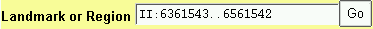
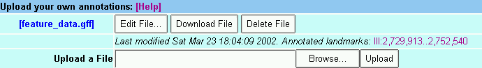
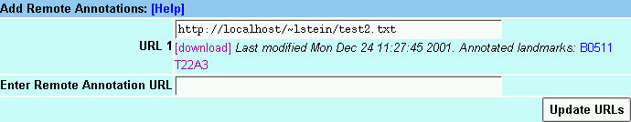

| Selecting Regions | Overview Panel | Detail Panel | Adding Annotations | Quick Uploads |
|---|
 To select a region of the genome to view, enter its name in the text field labeled "Landmark or Region". Recognized types of names are under the control of the administrator, but usually the following names are accepted:
If the landmark is found in the database, the browser will display the region of the genome it occupies. The region is displayed in two graphical panels:
If the requested landmark is not found, the browser will display a message to this effect.
At the administrator's option, some kinds of landmarks may have to be qualified with their "class" using the format class:landmark. For example, to look up the PCR product sjj_K08A8.1 in the C. elegans database, you will search for PCR_Product:sjj_K08A8.1.
In the case of clashes between names, such as a contig and a gene both named c23, you can use the name class to specify which landmark you mean.
You can view a precise region around a landmark using the notation landmark:start..stop, where start and stop are the start and stop positions of the sequence relative to the landmark. The beginning of the feature is position 1. In the case of complex features, such as genes, the "beginning" is defined by the database administrator. For example, in the C. elegans data set, position 1 of a predicted gene is the AUG at the beginning of the CDS, so to view the region that begins 100 base pairs upstream of the AUG ends 500 bases downstream of it, you would search for mek-1:-99..500.
This offset notation will work correctly for negative strand features as well as positive strand features. The coordinates are always relative to the feature itself.
To offset relative to a qualified feature name, just include the type name, as in PCR_Product:sjj_K08A8.1:-500..500 (note that this particular example only works with the C. elegans database).
Anything that you type into the "Landmark or Region" textbox that isn't recognized as a landmark will be treated as a full text search across the feature database. This will find comments or other feature notations that match the typed text. Depending on how the database is set up, you may find gene names, gene functions, author names, or bibliographic references.
If successfull, the browser will present you with a list of possible matching landmarks and their comments. You will then be asked to select one y to view. To see this in action, try typing "kinase" into the "Landmark or Region" box.
Once a region is displayed, you can navigate through it in a number of ways:
The detailed view is composed of a number of distinct tracks which stretch horizontally from one end of the display to another. Each track corresponds to a different type of genomic feature, and is distinguished by a distinctive graphical shape and color.
The key to the tracks is shown at the bottom of the detail panel. For more information on the source and nature of the track, click on the track label in the "Search Settings" area (discussed below).
The panel labeled "Search Settings" contains a series of checkboxes. Each checkbox corresponds to a track type. Selecting the checkbox activates its type. Select the label to the right of the checkbox to display a window that provides more detailed information on the track, such the algorithm used to generate it, its author, or citations.
This will bring up a window that has detailed settings for each of the tracks. Toggle the checkbox in the "Show" column to turn the track on and off (this is the same as changing the checkbox in the Search Settings area). Change the popup menu in the "Format" column to alter the appearance of the corresponding track. Options include: Compact which forces all items in the track onto a single overlapping line without labels or descriptions; Expand, which causes items to bump each other so that they don't collide; and Expand & Label, which causes items to be labeled with their names and a brief description. The default, Auto will choose compact mode if there are too many features on the track, or one of the expanded modes if there is sufficient room. Any changes you make are remembered the next time you visit the browser. Press Accept Changes and Return... when you are satisfied with the current options.
This browser supports third party annotations, both your own private annotations and published annotations contributed by third parties.
To view your own annotations on the displayed genome, go to the bottom of the screen and click on the Browse... button in the file upload area. This will prompt you for a text file containing your annotations. See the annotation format help document for information on how to create this file.
Once loaded, tracks containing these annotations will appear on the detailed display and you can control them just like any of the built-in tracks. In addition new Edit, Delete and Download buttons will appear in the file upload area. As their names imply, these buttons allow you to edit the uploaded file, download it, or delete it completely.

The date at which the uploaded file was created or last modified is printed next to its name. If there are a manageable number of annotated areas, GBrowse will create links that allow you to jump directly to them.
You may upload as many files as you wish, but be advised that the performance of the browser may decrease if there are many large uploads to process.
To view 3d party annotations, the annotations must be published on a reachable web server and you must know the annotation file's URL.

At the bottom of the browser window is a text box labeled "Enter Remote Annotation URL". Type in the URL and then press "Update URLs". The system will attempt to upload the indicated URL. If successful, the data will appear as one or more new tracks. Otherwise you will be alerted with an error message.
You may add as many remote URLs as you wish. To delete one, simply erase it and press "Update URLs" again.
Another way to upload your own features is by adding an "add" argument to the gbrowse URL. For example, this URL will create a track named "MyDeletions" containing a feature named "Deletion3". Deletion3 occupies the region on chromosome 3 between 10,050,000 and 10,051,000:
$GBROWSE?add=chr3+MyDeletions+Deletion3+10050000..10051000
You can have as many "add" options as you like:
$GBROWSE?add=chr3+MyDeletions+Deletion3+10050000..10051000;add=chr3+MyDeletions+Deletion4+950000..960000
The format is:
reference+trackName+featureName+start..stop,start..stop,start..stop ...
where "reference" is the name of the landmark that start and stop are relative to. You can use a chromosome name, a contig name, a gene name, or anything else that this browser recognizes in the search box. "trackName" is the name of the track to upload, "featureName" is the name of the feature you are uploading, and "start..stop" are the start and end coordinates relative to "reference". For multisegmented features, specify multiple start..stop pairs separated by commas.
For more control over the way quick upload features appear, specify the "style" option to the URL:
$GBROWSE?style=MyDeletions+glyph=arrow+double=1+fgcolor=blue
This says to configure the "MyDeletions" track with the following options:
glyph=arrow double=1 fgcolor=blue
See the uploaded annotation help file for more details
.As always, this software may contain bugs. Please report any that you suspect to the author, along with whatever information that you can provide as to what you were doing when the bug appeared.
Lincoln Stein <lstein@cshl.org>